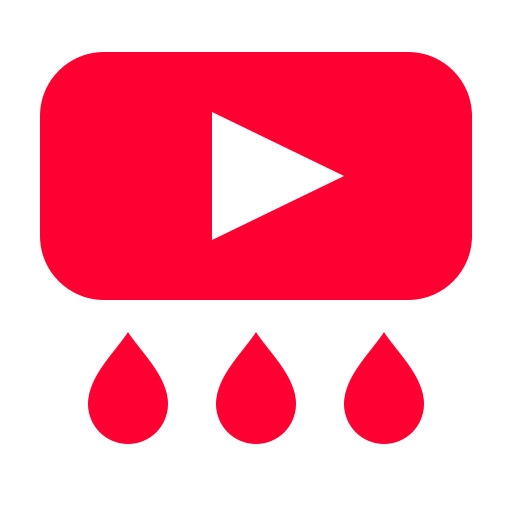

Pick up where you stopped
Open a video’s menu and choose Save, marked with YTWash’s red lightning. The video goes to Watch Later and its current time is remembered. Open it again in this browser to resume automatically.

YTWashSave your place. Watch playlists by creator. Automatically clear finished videos when you choose—all inside YouTube.
Experimental beta · Free and open source · Chrome, Edge, and temporary Firefox testing
Save and resume are built in. Options lets you choose creator grouping and automatic cleanup.
Open a video’s menu and choose Save, marked with YTWash’s red lightning. The video goes to Watch Later and its current time is remembered. Open it again in this browser to resume automatically.
Enable Group playlists by creator in Options. Every playlist and its watch-page sidebar use the same creator order. Play all, Next, and Previous follow it too. Single-video creators appear under Everything else.
Enable Remove completed videos from playlists in Options. After a video finishes, YTWash removes it from the playlist you are watching and clears its saved position. Your tab stays open. YTWash handles the playlist dialog automatically.
YTWash is distributed directly through GitHub while it is experimental. You don't need a YTWash account.
Firefox: extract the Firefox ZIP, open about:debugging#/runtime/this-firefox, choose Load Temporary Add-on, and select manifest.json. This unsigned beta is removed when Firefox closes.
Updating: extract the new browser ZIP into your existing extension folder, reload YTWash, and refresh YouTube. Keep the same installation to retain saved positions.
YTWash has passed automated browser tests using simulated YouTube pages, but hasn't been fully validated on signed-in YouTube. Changes to YouTube's interface may affect its features. Saved positions, settings, and playlist order stay in your browser profile and do not sync across devices. YTWash is not affiliated with YouTube or Google.